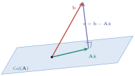
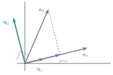
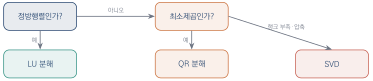
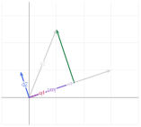

다양한 행렬 분해의 활용
이 장을 마치면
\(\mm{A}\vv{x} = \vv{b}\)에서 \(\mm{A}\)가 정방행렬이 아니면 어떻게 될까? 데이터 100개로 직선 하나를 맞추려 한다면 방정식은 100개, 미지수는 2개다. 이런 경우 모든 방정식을 동시에 만족하는 해는 거의 확실히 존재하지 않는다. 측정 오차가 조금이라도 있으면 100개의 점이 정확히 한 직선 위에 놓일 리 없기 때문이다.
그렇다고 포기할 수는 없다. 우리가 원하는 것은 가장 덜 틀린 답이다. 이 장에서는 그 답을 구하는 방법 — 최소제곱법과 유사 역행렬 — 을 배우고, 그것을 안정적으로 계산하기 위한 QR 분해를 익힌다. 그리고 8장의 LU, 10장의 고유값 분해, 11장의 SVD까지 지금까지 배운 모든 분해를 한자리에 모아 정리한다.
12.1 해가 없는 방정식과 최소제곱
과결정 방정식
다섯 개의 관측점 \((1, 2.1)\), \((2, 3.9)\), \((3, 6.2)\), \((4, 7.8)\), \((5, 10.1)\)에 직선 \(y = wx + b\)를 맞춰 보자. 각 점이 직선 위에 있으려면
방정식이 5개, 미지수가 2개다. 이런 상황을 과결정overdetermined이라 한다. 8장의 판정 규칙에 따르면 \(\rank(\mm{A}) = 2 < \rank([\mm{A}\mid\vv{b}]) = 3\)이므로 해가 없다.
import numpy as np
A = np.array([[1., 1.], [2., 1.], [3., 1.], [4., 1.], [5., 1.]])
b = np.array([2.1, 3.9, 6.2, 7.8, 10.1])
print('rank(A) :', np.linalg.matrix_rank(A))
print('rank([A|b]) :', np.linalg.matrix_rank(np.column_stack([A, b])))
print('-> 해가 없다')rank(A) : 2 rank([A|b]) : 3 -> 해가 없다
"가장 덜 틀린" 답
정확한 해가 없다면, 오차를 가장 작게 만드는 \(\vv{x}\)를 찾자. 오차를 어떻게 재느냐가 문제인데, 가장 흔한 선택은 잔차 벡터의 길이다.
\(\mm{A}\vv{x}=\vv{b}\)에 대하여
노름의 제곱을 최소화하므로 각 방정식의 오차를 제곱해서 더한 값을 최소화하는 셈이다. 그래서 "최소제곱"이라 부른다.
정사영으로 보는 최소제곱
여기서 4장의 정사영이 등장한다. 5장에서 배웠듯 \(\mm{A}\vv{x}\)는 \(\mm{A}\)의 열벡터들을 섞어 만든 벡터이므로, \(\vv{x}\)가 무엇이든 \(\mm{A}\vv{x}\)는 반드시 열공간 \(\Col(\mm{A})\) 안에 있다.
문제는 \(\vv{b}\)가 그 열공간 밖에 있다는 것이다. 그렇다면 열공간 안에서 \(\vv{b}\)에 가장 가까운 점은 어디인가? \(\vv{b}\)를 열공간에 정사영한 점이다.

4장에서 배운 정사영의 핵심 성질을 떠올리자. 잔차는 투영 대상에 수직이다. 여기서는 잔차가 열공간 전체에 수직이어야 하므로, \(\mm{A}\)의 모든 열과 직교해야 한다.
정리하면 다음을 얻는다.
최소제곱 해는 다음 정규방정식normal equation을 만족한다.
import numpy as np
import matplotlib.pyplot as plt
A = np.array([[1., 1.], [2., 1.], [3., 1.], [4., 1.], [5., 1.]])
b = np.array([2.1, 3.9, 6.2, 7.8, 10.1])
# 정규방정식으로 풀기
x_hat = np.linalg.solve(A.T @ A, A.T @ b)
print('기울기 w, 절편 b :', np.round(x_hat, 6))
r = b - A @ x_hat
print('잔차 :', np.round(r, 4))
print('잔차의 크기 :', round(np.linalg.norm(r), 6))
print('잔차가 열공간에 수직 :', np.allclose(A.T @ r, 0))
xs = np.linspace(0, 6, 100)
plt.figure(figsize=(5.5, 4))
plt.scatter(A[:, 0], b, color='crimson', s=50, zorder=5, label='data')
plt.plot(xs, x_hat[0] * xs + x_hat[1], color='steelblue', label='fit')
for xi, bi, ri in zip(A[:, 0], b, r):
plt.plot([xi, xi], [bi, bi - ri], color='gray', lw=1, ls='--')
plt.legend(); plt.grid(True, alpha=0.3)
plt.show()기울기 w, 절편 b : [1.99 0.05] 잔차 : [ 0.06 -0.13 0.18 -0.21 0.1 ] 잔차의 크기 : 0.327109 잔차가 열공간에 수직 : True
잔차가 \(\mm{A}\)의 열과 정확히 직교한다는 것이 확인된다. 그림에서 점선으로 표시된 것이 각 점의 잔차이며, 최소제곱은 이 점선들의 길이 제곱의 합을 최소화한 것이다.
식 \(\eqref{eq:ch12_lsq}\)을 그대로 코드로 옮기면 안 된다. \(\mm{A}\tp\mm{A}\)를 만드는 순간 11장에서 경고했듯 조건수가 제곱되어 정밀도를 잃는다. 실제로는 np.linalg.lstsq(내부적으로 SVD 사용)나 QR 분해를 써야 한다.
x1 = np.linalg.solve(A.T @ A, A.T @ b) # 나쁨
x2 = np.linalg.lstsq(A, b, rcond=None)[0] # 좋음
print(np.allclose(x1, x2)) # 이 예에서는 같지만...조건수가 나쁜 경우 무슨 일이 벌어지나
정규방정식의 위험을 직접 확인해 보자. 거의 일차종속인 열을 가진 행렬을 만들어 두 방법을 비교한다.
import numpy as np
eps = 1e-8
A = np.array([[1., 1.],
[eps, 0.],
[0., eps]])
b = np.array([2., eps, eps])
print('cond(A) :', f'{np.linalg.cond(A):.3e}')
print('cond(A.T A) :', f'{np.linalg.cond(A.T @ A):.3e}')
try:
print('정규방정식 :', np.linalg.solve(A.T @ A, A.T @ b))
except np.linalg.LinAlgError as e:
print('정규방정식 : 실패 -', e)
print('lstsq (SVD) :', np.linalg.lstsq(A, b, rcond=None)[0])
print('정답 : [1. 1.]')cond(A) : 1.414e+08 cond(A.T A) : 1.394e+17 정규방정식 : 실패 - Singular matrix lstsq (SVD) : [1. 1.] 정답 : [1. 1.]
조건수가 \(10^8\)에서 \(10^{17}\)로 뛰었고, 그 결과 정규방정식은 아예 풀리지 않았다. \(\mm{A}\tp\mm{A}\)가 부동소수점 위에서 특이행렬이 되어 버렸기 때문이다. 반면 같은 \(\mm{A}\)의 조건수는 \(10^8\)에 불과해 SVD를 쓰는 lstsq는 정확한 답을 내놓는다. 배정밀도의 유효 자릿수가 약 16자리이므로, 조건수를 제곱하는 순간 그 절반을 잃는다는 것이 이 실험의 교훈이다.
12.2 유사 역행렬
정방행렬이 아니어도 "역행렬"을
식 \(\eqref{eq:ch12_lsq}\)의 \((\mm{A}\tp\mm{A})\inv\mm{A}\tp\)를 보자. 이 덩어리를 \(\vv{b}\)에 곱하면 최소제곱 해가 나온다. 마치 \(\mm{A}\)의 역행렬처럼 행동하는 것이다. 여기에 이름을 붙이자.
행렬 \(\mm{A} \in \Rmat{m}{n}\)에 대하여 다음 네 조건을 만족하는 행렬 \(\mm{A}\pinv \in \Rmat{n}{m}\)이 유일하게 존재하며, 이를 무어–펜로즈 유사 역행렬Moore-Penrose pseudoinverse이라 한다.
정의는 추상적이지만 SVD를 쓰면 계산법이 아주 간단해진다.
\(\mm{A} = \mm{U}\mm{\Sigma}\mm{V}\tp\)일 때
핵심은 "0이 아닌 것만"이다. \(\sigma_i = 0\)인 자리는 역수를 취할 수 없으므로 그냥 0으로 둔다. 이 한 가지 처리 덕분에 특이행렬이든 직사각형이든 랭크가 부족하든 상관없이 유사 역행렬이 존재하게 된다.
import numpy as np
def pinv_by_svd(A, tol=1e-10):
"""SVD로 유사 역행렬을 직접 구한다."""
U, s, Vt = np.linalg.svd(A, full_matrices=False)
s_inv = np.where(s > tol, 1 / np.where(s > tol, s, 1), 0)
return Vt.T @ np.diag(s_inv) @ U.T
A = np.array([[1., 1.], [2., 1.], [3., 1.], [4., 1.], [5., 1.]])
print('직접 구현 :\n', np.round(pinv_by_svd(A), 6))
print('넘파이 :\n', np.round(np.linalg.pinv(A), 6))
print('일치 :', np.allclose(pinv_by_svd(A), np.linalg.pinv(A)))직접 구현 : [[-0.2 -0.1 0. 0.1 0.2] [ 0.8 0.5 0.2 -0.1 -0.4]] 넘파이 : [[-0.2 -0.1 0. 0.1 0.2] [ 0.8 0.5 0.2 -0.1 -0.4]] 일치 : True
유사 역행렬이 하는 일
\(\mm{A}\pinv\vv{b}\)가 무엇인지 세 가지 경우로 나누어 보자.
| 상황 | \(\mm{A}\pinv\vv{b}\)의 의미 |
|---|---|
| \(\mm{A}\)가 가역 | \(\mm{A}\inv\vv{b}\)와 같다 (보통의 해) |
| 방정식이 많고 해가 없음 | 최소제곱 해 (오차를 최소로) |
| 미지수가 많고 해가 무수히 많음 | 최소노름 해 (해 중에서 길이가 가장 짧은 것) |
세 번째 경우가 특히 우아하다. 해가 무수히 많을 때 유사 역행렬은 그중 하나를 아무렇게나 고르는 것이 아니라, 크기가 가장 작은 해를 골라 준다. 머신러닝에서 "작은 가중치를 선호한다"는 정규화의 정신과 통하는 선택이다.
import numpy as np
# ① 정방·가역
A1 = np.array([[2., 1.], [1., 3.]])
b1 = np.array([5., 10.])
print('가역 :', np.linalg.pinv(A1) @ b1, np.linalg.solve(A1, b1))
# ② 과결정 (해 없음) -> 최소제곱
A2 = np.array([[1., 1.], [2., 1.], [3., 1.]])
b2 = np.array([2., 5., 7.])
x2 = np.linalg.pinv(A2) @ b2
print('과결정 :', np.round(x2, 6),
' 잔차 =', round(np.linalg.norm(A2 @ x2 - b2), 6))
# ③ 부족결정 (해 무수히 많음) -> 최소노름
A3 = np.array([[1., 1., 1.]])
b3 = np.array([6.])
x3 = np.linalg.pinv(A3) @ b3
print('부족결정:', np.round(x3, 6), ' 노름 =', round(np.linalg.norm(x3), 6))
print(' 다른 해 (6,0,0)의 노름 :', np.linalg.norm([6., 0., 0.]))가역 : [1. 3.] [1. 3.] 과결정 : [ 2.5 -0.333333] 잔차 = 0.408248 부족결정: [2. 2. 2.] 노름 = 3.464102 다른 해 (6,0,0)의 노름 : 6.0
세 번째 결과를 보라. \(x+y+z=6\)의 해는 무수히 많은데, 유사 역행렬은 \((2,2,2)\)를 골랐다. 노름이 3.46으로 \((6,0,0)\)의 6보다 작다. 실제로 \((2,2,2)\)가 모든 해 중 가장 짧다.
작은 특이값을 어떻게 다룰 것인가
식 \(\eqref{eq:ch12_pinv}\)에서 \(1/\sigma_i\)를 계산할 때, \(\sigma_i\)가 0은 아니지만 매우 작으면 어떻게 될까? 역수가 폭발적으로 커져 결과를 망친다. 그래서 문턱값보다 작은 특이값은 0으로 간주한다.
넘파이의 np.linalg.pinv에는 rcond 인자가 있으며, \(\sigma_i < \text{rcond} \times \sigma_1\)인 것을 버린다.
import numpy as np
# 특이값이 [1, 0.5, 1e-9]인 행렬을 일부러 만든다
rng = np.random.default_rng(0)
U, _ = np.linalg.qr(rng.normal(0, 1, (6, 3)))
V, _ = np.linalg.qr(rng.normal(0, 1, (3, 3)))
A = U @ np.diag([1.0, 0.5, 1e-9]) @ V.T
# b에 작은 특이값 방향 성분을 아주 조금(1e-3)만 섞는다
b = U[:, 0] * 1.0 + U[:, 1] * 0.5 + U[:, 2] * 1e-3
print('특이값 :', np.linalg.svd(A, compute_uv=False))
for rc in [1e-15, 1e-6]:
x = np.linalg.pinv(A, rcond=rc) @ b
print(f'rcond={rc:.0e} -> 노름={np.linalg.norm(x):.4e}, '
f'잔차={np.linalg.norm(A @ x - b):.3e}')특이값 : [1.00000000e+00 5.00000000e-01 9.99999929e-10] rcond=1e-15 -> 노름=1.0000e+06, 잔차=9.008e-09 rcond=1e-06 -> 노름=1.4142e+00, 잔차=1.000e-03
두 결과의 잔차는 사실상 차이가 없다(0에 가까운 값과 \(10^{-3}\)). 그런데 해의 크기는 백만 대 1.41로 백만 배 가까이 차이 난다. 잔차를 \(10^{-3}\)만큼 더 줄이겠다고 백만 배 큰 해를 받아들이는 것은 명백히 손해다. 데이터가 조금만 흔들려도 첫 번째 해는 완전히 달라지지만 두 번째는 안정적이다. 작은 특이값을 잘라 내는 것은 곧 정규화이며, 머신러닝에서 과적합을 막는 기법들과 같은 원리다.
과적합을 막는 대표적 기법인 릿지 회귀는 다음 문제를 푼다.
즉 릿지 회귀는 특이값 스펙트럼 위에서 정의된 필터다. 정규화 기법의 정체를 선형대수로 들여다본 좋은 예다.
12.3 QR 분해
직교하는 기저를 만들어 내기
정규방정식이 위험한 이유는 \(\mm{A}\tp\mm{A}\)를 만들기 때문이었다. 그것을 피하려면 어떻게 해야 할까?
아이디어는 이렇다. \(\mm{A}\)의 열들이 서로 직교했다면 문제가 훨씬 쉬웠을 것이다. 직교하는 열로 이루어진 행렬 \(\mm{Q}\)는 \(\mm{Q}\tp\mm{Q} = \Id\)이므로 \(\mm{Q}\tp\mm{Q}\)를 만들 필요조차 없다. 그렇다면 \(\mm{A}\)의 열을 직교하게 바꿔 놓으면 되지 않을까?
행렬 \(\mm{A} \in \Rmat{m}{n}\)(\(m \geq n\), 열이 일차독립)은 다음과 같이 분해된다.
그람–슈미트 과정
\(\mm{Q}\)를 만드는 고전적인 방법이 그람-슈미트 직교화Gram-Schmidt process다. 원리는 4장의 정사영 하나면 충분하다.
| 단계 | 하는 일 |
|---|---|
| ① | 첫 벡터를 정규화해 \(\vv{q}_1\)로 삼는다 |
| ② | 다음 벡터에서 앞서 만든 \(\vv{q}\)들 방향의 성분을 모두 빼낸다 |
| ③ | 남은 것(잔차)을 정규화해 \(\vv{q}_2\)로 삼는다 |
| ④ | 모든 열에 대해 ②–③을 반복한다 |

import numpy as np
def gram_schmidt(A):
"""그람-슈미트 과정으로 QR 분해를 수행한다."""
A = np.asarray(A, dtype=float)
m, n = A.shape
Q = np.zeros((m, n))
R = np.zeros((n, n))
for j in range(n):
v = A[:, j].copy()
for i in range(j): # 앞서 만든 q들의 성분 제거
R[i, j] = Q[:, i] @ A[:, j]
v -= R[i, j] * Q[:, i]
R[j, j] = np.linalg.norm(v)
Q[:, j] = v / R[j, j] # 정규화
return Q, R
A = np.array([[1., 1., 0.],
[1., 0., 1.],
[0., 1., 1.],
[1., 1., 1.]])
Q, R = gram_schmidt(A)
print('Q:\n', np.round(Q, 4))
print('R:\n', np.round(R, 4))
print('Q.T Q == I :', np.allclose(Q.T @ Q, np.eye(3)))
print('Q R == A :', np.allclose(Q @ R, A))
print('R이 상삼각 :', np.allclose(R, np.triu(R)))Q: [[ 0.5774 0.2582 -0.6761] [ 0.5774 -0.5164 0.5071] [ 0. 0.7746 0.5071] [ 0.5774 0.2582 0.169 ]] R: [[1.7321 1.1547 1.1547] [0. 1.291 0.5164] [0. 0. 1.1832]] Q.T Q == I : True Q R == A : True R이 상삼각 : True
\(\mm{R}\)이 상삼각행렬로 나오는 것은 우연이 아니다. \(\vv{q}_j\)를 만들 때 \(\vv{a}_1, \ldots, \vv{a}_j\)만 사용했으므로, 거꾸로 \(\vv{a}_j\)는 \(\vv{q}_1, \ldots, \vv{q}_j\)만으로 표현된다. 그래서 \(\mm{R}\)의 \(j\)열은 \(j\)행까지만 값이 있다.
위의 고전적 그람–슈미트는 수치적으로 불안정하다. 벡터들이 거의 평행할 때 빼기에서 자릿수 손실이 크게 일어나 \(\mm{Q}\)의 직교성이 무너진다. 실무에서는 수정 그람–슈미트(빼기를 순차적으로 수행)나 하우스홀더 반사를 쓴다. np.linalg.qr은 하우스홀더 방식을 사용한다.
import numpy as np
# 거의 평행한 열을 가진 행렬로 두 방법 비교
eps = 1e-8
A = np.array([[1., 1., 1.],
[eps, 0., 0.],
[0., eps, 0.],
[0., 0., eps]])
Q1, _ = gram_schmidt(A)
Q2, _ = np.linalg.qr(A)
print('고전 GS의 직교성 오차 :',
f'{np.abs(Q1.T @ Q1 - np.eye(3)).max():.2e}')
print('넘파이 qr의 직교성 오차:',
f'{np.abs(Q2.T @ Q2 - np.eye(3)).max():.2e}')고전 GS의 직교성 오차 : 5.00e-01 넘파이 qr의 직교성 오차: 6.66e-16
직교성 오차가 열다섯 자리 넘게 벌어졌다. 고전적 방식은 이 예에서 사실상 직교하지 않는 \(\mm{Q}\)를 내놓은 셈이다. 원리를 이해하기 위해 직접 구현해 보되, 실전에서는 라이브러리를 쓰자는 이 책의 태도가 여기서도 적용된다.
QR로 최소제곱 풀기
QR 분해가 있으면 정규방정식을 만들지 않고 최소제곱을 풀 수 있다. \(\mm{A} = \mm{Q}\mm{R}\)을 식 \(\eqref{eq:ch12_normal}\)에 넣어 보자.
마지막 식은 상삼각 방정식이므로 역대입만으로 즉시 풀린다. \(\mm{A}\tp\mm{A}\)는 어디에도 나타나지 않았다.
import numpy as np
def lstsq_qr(A, b):
"""QR 분해로 최소제곱 해를 구한다."""
Q, R = np.linalg.qr(A)
y = Q.T @ b
# 상삼각 역대입
n = R.shape[1]
x = np.zeros(n)
for i in range(n - 1, -1, -1):
x[i] = (y[i] - R[i, i+1:] @ x[i+1:]) / R[i, i]
return x
A = np.array([[1., 1.], [2., 1.], [3., 1.], [4., 1.], [5., 1.]])
b = np.array([2.1, 3.9, 6.2, 7.8, 10.1])
print('QR 방식 :', np.round(lstsq_qr(A, b), 8))
print('정규방정식 :', np.round(np.linalg.solve(A.T @ A, A.T @ b), 8))
print('넘파이 lstsq :', np.round(np.linalg.lstsq(A, b, rcond=None)[0], 8))QR 방식 : [1.99 0.05] 정규방정식 : [1.99 0.05] 넘파이 lstsq : [1.99 0.05]
최소제곱을 푸는 세 가지 방법과 그 성격을 정리해 두자.
| 방법 | 안정성 | 비용 |
|---|---|---|
| 정규방정식 | 나쁨 (조건수 제곱) | 가장 싸다 |
| QR 분해 | 좋음 | 중간 |
| SVD | 가장 좋음 | 가장 비싸다 |
np.linalg.lstsq는 SVD를 사용한다. 랭크가 부족해도 안전하게 최소노름 해를 준다.QR 알고리즘 — 고유값을 구하는 방법
9장에서 예고했던 QR 알고리즘을 이제 구현할 수 있다. 아이디어는 놀랄 만큼 단순하다.
분해하고, 순서를 바꿔 다시 곱한다. 이것을 반복하면 행렬이 점점 상삼각행렬에 가까워지고, 대각성분이 고유값으로 수렴한다.
왜 이것이 통할까? \(\mm{A}_{k+1} = \mm{R}_k\mm{Q}_k = \mm{Q}_k\tp\mm{A}_k\mm{Q}_k\)이므로, 각 단계가 직교 닮음변환이다. 10장에서 배웠듯 닮음변환은 고유값을 보존한다. 따라서 모든 \(\mm{A}_k\)가 같은 고유값을 가지며, 그 극한이 삼각행렬이면 대각성분이 곧 고유값이다.
import numpy as np
def qr_algorithm(A, iters=500):
"""QR 알고리즘으로 모든 고유값을 구한다."""
A = np.asarray(A, dtype=float).copy()
for _ in range(iters):
Q, R = np.linalg.qr(A)
A = R @ Q # 순서를 바꿔 곱한다
return np.diag(A)
rng = np.random.default_rng(0)
M = rng.normal(0, 1, (5, 5))
S = (M + M.T) / 2 # 대칭 -> 실수 고유값 보장
print('QR 알고리즘 :', np.round(np.sort(qr_algorithm(S)), 6))
print('넘파이 eigh :', np.round(np.linalg.eigh(S)[0], 6))QR 알고리즘 : [-2.650543 -0.238893 0.042382 1.218436 2.048418] 넘파이 eigh : [-2.650543 -0.238893 0.042382 1.218436 2.048418]
특성방정식을 세우지도, 다항식의 근을 구하지도 않았다. QR 분해를 반복한 것이 전부인데 다섯 개의 고유값이 모두 정확히 나왔다. 실제 LAPACK 구현은 여기에 이동(shift)과 축소(deflation) 기법을 더해 수렴을 가속하지만, 뼈대는 이 다섯 줄이다.
12.4 어떤 분해를 언제 쓸 것인가
네 가지 분해의 지도
지금까지 네 가지 분해를 배웠다. 한자리에 모아 정리하자.
| 분해 | 형태 | 조건 | 주된 용도 |
|---|---|---|---|
| LU (8장) | \(\mm{P}\mm{A} = \mm{L}\mm{U}\) | 정방 | 연립방정식, 행렬식 |
| QR (12장) | \(\mm{A} = \mm{Q}\mm{R}\) | 열이 독립 | 최소제곱, 고유값 알고리즘 |
| 고유값 (10장) | \(\mm{A} = \mm{V}\mm{\Lambda}\mm{V}\inv\) | 대각화 가능 | 거듭제곱, 동역학, 정상상태 |
| SVD (11장) | \(\mm{A} = \mm{U}\mm{\Sigma}\mm{V}\tp\) | 제약 없음 | 압축, PCA, 유사 역행렬, 랭크 |
아래로 갈수록 강력해지지만 비용도 커진다. 필요한 만큼만 강한 도구를 쓰는 것이 좋은 선택이다.

같은 문제를 여러 방법으로 풀어 보기
\(\mm{A}\vv{x}=\vv{b}\)를 정방행렬에 대해 여러 방법으로 풀고 비용과 정확도를 비교해 보자.
import numpy as np
import time
rng = np.random.default_rng(0)
n = 600
A = rng.normal(0, 1, (n, n)) + n * np.eye(n)
b = rng.normal(0, 1, n)
methods = {}
t0 = time.time(); x = np.linalg.solve(A, b); methods['solve (LU)'] = (time.time()-t0, x)
t0 = time.time(); x = np.linalg.inv(A) @ b; methods['inv'] = (time.time()-t0, x)
t0 = time.time()
Q, R = np.linalg.qr(A); x = np.linalg.solve(R, Q.T @ b)
methods['QR'] = (time.time()-t0, x)
t0 = time.time(); x = np.linalg.pinv(A) @ b; methods['SVD (pinv)'] = (time.time()-t0, x)
for name, (t, x) in methods.items():
print(f'{name:12s}: {t:.4f} sec, 잔차 {np.linalg.norm(A @ x - b):.3e}')solve (LU) : 0.0015 sec, 잔차 3.313e-14 inv : 0.0046 sec, 잔차 3.124e-14 QR : 0.0099 sec, 잔차 3.052e-14 SVD (pinv) : 0.0495 sec, 잔차 9.636e-14
정방이고 조건이 좋은 문제라면 solve(내부적으로 LU)가 가장 빠르고 정확도도 충분하다. SVD를 쓰는 pinv는 수십 배 느리다(측정값은 기기에 따라 다르다). 강력한 도구가 항상 옳은 선택은 아니다.
다항식 곡선 맞추기
최소제곱은 직선에만 쓰는 것이 아니다. \(\mm{A}\)의 열을 어떻게 구성하느냐에 따라 어떤 모양의 곡선이든 맞출 수 있다.
미지수 \(c_i\)에 대해서는 여전히 1차식이므로 선형대수의 방법이 그대로 통한다. 이것이 "선형회귀"의 "선형"이 뜻하는 바다. 데이터와 \(y\)의 관계가 직선이라는 뜻이 아니라, 계수에 대해 선형이라는 뜻이다.
import numpy as np
import matplotlib.pyplot as plt
rng = np.random.default_rng(3)
x = np.linspace(-3, 3, 25)
y_true = 0.5 * x ** 3 - 2 * x + 1
y = y_true + rng.normal(0, 1.2, len(x))
xs = np.linspace(-3.2, 3.2, 200)
plt.figure(figsize=(6, 4))
plt.scatter(x, y, color='crimson', s=30, zorder=5, label='data')
for deg, style in [(1, '--'), (3, '-'), (12, ':')]:
A = np.vander(x, deg + 1) # 반데르몬드 행렬
c = np.linalg.lstsq(A, y, rcond=None)[0]
plt.plot(xs, np.vander(xs, deg + 1) @ c, style, label=f'degree {deg}')
plt.plot(xs, 0.5 * xs**3 - 2*xs + 1, color='gray', lw=1, label='truth')
plt.ylim(-15, 15); plt.legend(fontsize=8); plt.grid(True, alpha=0.3)
plt.show()
for deg in [1, 3, 12]:
A = np.vander(x, deg + 1)
c = np.linalg.lstsq(A, y, rcond=None)[0]
r = np.linalg.norm(A @ c - y)
print(f'degree {deg:2d}: 잔차 {r:.4f}, cond(A) = {np.linalg.cond(A):.2e}')degree 1: 잔차 12.3585, cond(A) = 1.80e+00 degree 3: 잔차 6.7856, cond(A) = 1.77e+01 degree 12: 잔차 4.3196, cond(A) = 3.66e+06
차수를 올리면 잔차는 계속 줄지만, 12차에서는 데이터 사이에서 곡선이 심하게 요동친다. 전형적인 과적합이다. 그리고 조건수가 \(10^6\)까지 치솟은 것도 눈여겨보자. 고차 다항식의 반데르몬드 행렬은 열들이 서로 거의 평행해져서, 수치적으로도 나쁜 문제가 된다.
다항식 회귀에서 차수를 올릴 때는 두 가지가 함께 나빠진다. 통계적으로 과적합이 일어나고, 수치적으로 조건수가 폭발한다. 15차를 넘어가면 배정밀도로도 계산이 무의미해진다. 실무에서는 직교 다항식 기저(체비쇼프 등)를 쓰거나 정규화를 건다.
데이터에 평면 맞추기
특징이 둘 이상이어도 원리는 같다. 열을 하나 더 붙이면 된다.
import numpy as np
rng = np.random.default_rng(5)
n = 100
x1 = rng.uniform(-3, 3, n)
x2 = rng.uniform(-3, 3, n)
y = 2.0 * x1 - 1.5 * x2 + 4.0 + rng.normal(0, 0.5, n)
A = np.column_stack([x1, x2, np.ones(n)]) # [x1, x2, 1]
coef = np.linalg.lstsq(A, y, rcond=None)[0]
print('추정 계수 :', np.round(coef, 4))
print('참값 : [ 2. -1.5 4. ]')
print('잔차 norm :', round(np.linalg.norm(A @ coef - y), 4))
print('R^2 :',
round(1 - np.var(y - A @ coef) / np.var(y), 6))추정 계수 : [ 1.9655 -1.4653 4.0174] 참값 : [ 2. -1.5 4. ] 잔차 norm : 4.7271 R^2 : 0.984916
이것이 머신러닝에서 말하는 선형회귀의 전부다. 마지막 열 np.ones(n)이 절편을 담당하고, 나머지 열이 각 특징을 담당한다. 모델을 학습시킨다는 것은 최소제곱 문제를 푸는 것이며, 그 해법은 이 장에서 배운 유사 역행렬과 QR 분해다.
- 정방·조건 좋음 \(\to\)
solve(LU). 가장 빠르다. - 최소제곱 \(\to\)
lstsq(SVD) 또는 QR. 정규방정식은 피한다. - 랭크 부족·압축·차원 축소 \(\to\) SVD.
- 반복 동역학·정상상태 \(\to\) 고유값 분해.
- 최소제곱 직선을 세 방법으로 구하자. 정규방정식, QR, SVD로 각각 풀고 결과를 비교하시오.
import numpy as np rng = np.random.default_rng(0) x = np.linspace(0, 10, 30) y = 2.5 * x + 1.2 + rng.normal(0, 1.5, 30) A = np.column_stack([x, np.ones_like(x)]) x1 = np.linalg.solve(A.T @ A, A.T @ y) Q, R = np.linalg.qr(A); x2 = np.linalg.solve(R, Q.T @ y) x3 = np.linalg.lstsq(A, y, rcond=None)[0] x4 = np.linalg.pinv(A) @ y for name, sol in [('normal', x1), ('QR', x2), ('lstsq', x3), ('pinv', x4)]: print(f'{name:8s}: {np.round(sol, 8)}') - 잔차가 열공간에 수직임을 확인하자. 최소제곱 해의 잔차와 \(\mm{A}\)의 각 열의 내적을 구하시오.
import numpy as np import matplotlib.pyplot as plt A = np.array([[1., 0.], [1., 1.], [1., 2.], [1., 3.]]) b = np.array([1.5, 1.8, 3.2, 3.4]) x = np.linalg.lstsq(A, b, rcond=None)[0] r = b - A @ x print('잔차 :', np.round(r, 6)) print('A.T @ r :', np.round(A.T @ r, 12)) print('각 열과의 내적 :', [round(A[:, j] @ r, 12) for j in range(2)]) print('잔차의 크기 :', round(np.linalg.norm(r), 6)) # 다른 x를 넣어 보면 잔차가 더 커진다 for dx in [[0.1, 0], [0, 0.1], [-0.05, 0.05]]: x2 = x + np.array(dx) print(f'x + {dx} -> 잔차 {np.linalg.norm(b - A @ x2):.6f}') - 그람–슈미트를 구현하고 시각화하자. 2차원에서 두 벡터를 직교화하는 과정을 그리시오.
import numpy as np from tuvis import * a1 = np.array([3., 1.]) a2 = np.array([1., 2.5]) q1 = a1 / np.linalg.norm(a1) p = (a2 @ q1) * q1 # a2의 q1 방향 성분 v = a2 - p q2 = v / np.linalg.norm(v) print('q1 . q2 :', round(q1 @ q2, 12)) fig, ax = new_axes(xlim=(-1, 4), ylim=(-1, 3.5)) draw_vector(ax, a1, color='lightgray', label='a1') draw_vector(ax, a2, color='lightgray', label='a2') draw_vector(ax, q1, color='crimson', label='q1') draw_vector(ax, p, color='mediumpurple', label='proj') draw_vector(ax, v, origin=p, color='seagreen') draw_vector(ax, q2, color='royalblue', label='q2') fig.show()>!

- 유사 역행렬의 세 얼굴을 확인하자. 가역·과결정·부족결정 세 경우에 대해
pinv가 무엇을 주는지 확인하시오.import numpy as np cases = [ ('가역', np.array([[2., 1.], [1., 3.]]), np.array([5., 10.])), ('과결정', np.array([[1., 1.], [2., 1.], [3., 1.]]), np.array([2., 5., 7.])), ('부족결정', np.array([[1., 2., 3.]]), np.array([12.])), ] for name, A, b in cases: x = np.linalg.pinv(A) @ b print(f'{name:8s}: x={np.round(x, 4)}, ' f'잔차={np.linalg.norm(A @ x - b):.6f}, ' f'노름={np.linalg.norm(x):.4f}') - 작은 특이값을 자르는 효과를 관찰하자.
rcond를 바꿔 가며 해의 크기와 잔차를 비교하시오.import numpy as np import matplotlib.pyplot as plt rng = np.random.default_rng(1) # 조건수가 나쁜 행렬 만들기 U, _ = np.linalg.qr(rng.normal(0, 1, (20, 5))) V, _ = np.linalg.qr(rng.normal(0, 1, (5, 5))) s = np.array([1.0, 0.5, 0.1, 1e-6, 1e-9]) A = U @ np.diag(s) @ V.T b = rng.normal(0, 1, 20) rconds = [1e-12, 1e-8, 1e-5, 1e-2] for rc in rconds: x = np.linalg.pinv(A, rcond=rc) @ b print(f'rcond={rc:.0e}: 노름={np.linalg.norm(x):12.4f}, ' f'잔차={np.linalg.norm(A @ x - b):.6f}')문턱값을 높이면 해의 크기가 급격히 작아지는 반면 잔차는 거의 늘지 않는다. 안정성을 거의 공짜로 얻는 것이다.
- QR 알고리즘으로 고유값을 구하자. 반복 과정에서 행렬이 삼각행렬로 변해 가는 모습을 그림으로 확인하시오.
import numpy as np from tuvis import * rng = np.random.default_rng(2) M = rng.normal(0, 1, (6, 6)) A = (M + M.T) / 2 snaps = [A.copy()] for k in range(60): Q, R = np.linalg.qr(A) A = R @ Q if k in (2, 9, 59): snaps.append(A.copy()) fig, axes = new_matrix_axes(ncols=4) titles = ['k=0', 'k=3', 'k=10', 'k=60'] for ax, S, t in zip(axes, snaps, titles): show_matrix(ax, S, fmt='', title=t) print('대각성분 :', np.round(np.sort(np.diag(A)), 6)) print('넘파이 :', np.round(np.linalg.eigh(snaps[0])[0], 6)) fig.show()>!

반복할수록 대각선 밖의 색이 옅어지며 대각행렬에 가까워진다.
- 다항식 회귀와 과적합을 관찰하자. 차수를 1부터 15까지 바꿔 가며 훈련 오차와 검증 오차를 비교하시오.
import numpy as np import matplotlib.pyplot as plt rng = np.random.default_rng(7) x_all = np.sort(rng.uniform(-3, 3, 40)) y_all = 0.5 * x_all ** 3 - 2 * x_all + 1 + rng.normal(0, 1.5, 40) idx = rng.permutation(40) tr, te = idx[:25], idx[25:] degs = range(1, 16) train_err, test_err = [], [] for d in degs: A = np.vander(x_all[tr], d + 1) c = np.linalg.lstsq(A, y_all[tr], rcond=None)[0] train_err.append(np.linalg.norm(A @ c - y_all[tr]) / len(tr) ** 0.5) B = np.vander(x_all[te], d + 1) test_err.append(np.linalg.norm(B @ c - y_all[te]) / len(te) ** 0.5) plt.figure(figsize=(6, 3.8)) plt.semilogy(degs, train_err, 'o-', label='train') plt.semilogy(degs, test_err, 's-', label='test') plt.xlabel('polynomial degree'); plt.ylabel('RMSE') plt.legend(); plt.grid(True, alpha=0.3) plt.show() print('최적 차수 :', list(degs)[int(np.argmin(test_err))])훈련 오차는 계속 줄지만 검증 오차는 어느 지점부터 다시 커진다. 이 그래프가 머신러닝 교과서 첫 장에 나오는 과적합 곡선이며, 그 밑바닥에는 이 장의 최소제곱이 있다.
12장 요약
- 방정식이 미지수보다 많은 과결정 문제에서는 대개 정확한 해가 없다. 이때 잔차의 크기를 최소로 만드는 \(\hat{\vv{x}} = \argmin\norm{\mm{A}\vv{x}-\vv{b}}^2\)을 최소제곱 해라 한다.
- 기하적으로 최소제곱 해는 \(\vv{b}\)를 \(\mm{A}\)의 열공간에 정사영한 것이다. 4장에서 배운 "잔차는 투영 대상에 수직"이라는 성질이 그대로 적용된다.
- 그 수직 조건 \(\mm{A}\tp(\vv{b}-\mm{A}\hat{\vv{x}}) = \zerovec\)을 정리하면 정규방정식 \(\mm{A}\tp\mm{A}\hat{\vv{x}} = \mm{A}\tp\vv{b}\)를 얻고, 열이 일차독립이면 \(\hat{\vv{x}} = (\mm{A}\tp\mm{A})\inv\mm{A}\tp\vv{b}\)다.
- 정규방정식을 그대로 계산하면 안 된다. \(\mm{A}\tp\mm{A}\)를 만드는 순간 조건수가 제곱되어 유효 자릿수를 절반 잃는다. QR이나 SVD를 써야 한다.
- 무어–펜로즈 유사 역행렬 \(\mm{A}\pinv\)은 SVD로 간단히 계산된다: \(\mm{A}\pinv = \mm{V}\mm{\Sigma}\pinv\mm{U}\tp\)이며, \(\mm{\Sigma}\pinv\)은 0이 아닌 특이값만 역수를 취한 것이다.
- \(\mm{A}\pinv\vv{b}\)는 상황에 따라 세 가지를 준다: \(\mm{A}\)가 가역이면 보통의 해, 과결정이면 최소제곱 해, 부족결정이면 최소노름 해(해 중 가장 짧은 것)다.
- 아주 작은 특이값의 역수는 폭발하므로 문턱값(
rcond)보다 작은 것은 0으로 처리한다. 이렇게 하면 잔차는 거의 그대로인데 해의 크기가 안정된다. 작은 특이값을 자르는 것이 곧 정규화다. - 릿지 회귀는 문턱값으로 딱 자르는 대신 \(\sigma_i/(\sigma_i^2+\alpha)\)라는 계수로 작은 성분을 부드럽게 억제한다. 특이값 스펙트럼 위의 필터인 셈이다.
- QR 분해 \(\mm{A} = \mm{Q}\mm{R}\)에서 \(\mm{Q}\)는 열이 정규직교, \(\mm{R}\)은 상삼각이다. 그람–슈미트 과정(앞선 방향의 성분을 빼고 정규화)으로 만들 수 있으며, \(\mm{R}\)이 상삼각이 되는 것은 \(\vv{a}_j\)가 \(\vv{q}_1,\dots,\vv{q}_j\)로만 표현되기 때문이다.
- 고전적 그람–슈미트는 수치적으로 불안정하다. 실무에서는 수정 그람–슈미트나 하우스홀더 반사를 쓰며,
np.linalg.qr이 후자를 사용한다. - QR로 최소제곱을 풀면 \(\mm{R}\hat{\vv{x}} = \mm{Q}\tp\vv{b}\)라는 상삼각 방정식만 남는다. \(\mm{A}\tp\mm{A}\)가 등장하지 않는다.
- QR 알고리즘: \(\mm{A}_k = \mm{Q}_k\mm{R}_k\)로 분해한 뒤 \(\mm{A}_{k+1} = \mm{R}_k\mm{Q}_k\)로 순서를 바꿔 곱하기를 반복하면 대각성분이 고유값으로 수렴한다. 각 단계가 직교 닮음변환이므로 고유값이 보존되기 때문이다.
- 분해의 선택: 정방·조건 좋음 \(\to\) LU(
solve), 최소제곱 \(\to\) QR 또는 SVD(lstsq), 랭크 부족·압축 \(\to\) SVD, 반복 동역학 \(\to\) 고유값 분해. 강력한 도구일수록 비용이 크므로 필요한 만큼만 쓴다. - 최소제곱은 직선에 국한되지 않는다. \(\mm{A}\)의 열을 \(1, x, x^2, \ldots\)로 구성하면 다항식 회귀가 되고, 여러 특징을 열로 붙이면 다변수 회귀가 된다. "선형"은 계수에 대해 선형이라는 뜻이다.
- 다항식의 차수를 올리면 훈련 오차는 줄지만 과적합이 일어나고 반데르몬드 행렬의 조건수도 폭발한다. 통계적 문제와 수치적 문제가 함께 나빠지는 것이다.
12장 연습문제
- ★ 과결정 방정식이 무엇인지 설명하고, 왜 대개 해가 없는지 서술하시오.
- ★★ 세 점 \((1,2)\), \((2,3)\), \((3,5)\)에 직선 \(y = wx+b\)를 맞추는 최소제곱 문제를 세우고 정규방정식으로 푸시오.
- ★★ 문제 2의 잔차 벡터를 구하고, \(\mm{A}\)의 두 열과 각각 직교함을 확인하시오.
- ★★ 최소제곱 해가 "\(\vv{b}\)를 열공간에 정사영한 것"이라는 말의 뜻을 그림과 함께 설명하시오.
- ★★ 정규방정식을 직접 계산하는 것이 위험한 이유를 조건수의 관점에서 설명하시오.
- ★★ \(\mm{A} = \begin{bmatrix}1&0\\0&1\\0&0\end{bmatrix}\)의 유사 역행렬을 손으로 구하고
np.linalg.pinv로 확인하시오. - ★★ 다음 각 경우에 \(\mm{A}\pinv\vv{b}\)가 무엇을 뜻하는지 답하시오.
- \(\mm{A}\)가 \(3\times3\) 가역행렬
- \(\mm{A}\)가 \(10\times3\)이고 랭크 3
- \(\mm{A}\)가 \(2\times5\)이고 랭크 2
- ★★★ \(x + y + z = 9\)의 해 중 노름이 가장 작은 것을 유사 역행렬로 구하고, 그것이 실제로 최소임을 라그랑주 승수법이나 수치 실험으로 확인하시오.
- ★★★ 특이값이 \([1, 0.1, 10^{-8}]\)인 \(10\times3\) 행렬을 만들고,
rcond를 바꿔 가며 유사 역행렬 해의 노름과 잔차를 표로 정리하시오. - ★★ 벡터 \((1,1,0)\), \((1,0,1)\), \((0,1,1)\)을 그람–슈미트 과정으로 직교화하고, 결과가 정규직교인지 확인하시오.
- ★★★ 그람–슈미트를 직접 구현하고, 거의 평행한 벡터들에 대해
np.linalg.qr과 직교성 오차를 비교하시오. - ★★★ QR 분해로 최소제곱을 푸는 함수를 작성하고, 정규방정식·
lstsq와 결과를 비교하시오. 조건수가 나쁜 문제에서 차이를 확인하시오. - ★★★ QR 알고리즘을 구현하여 \(5\times5\) 대칭행렬의 고유값을 구하시오. 반복 횟수에 따라 대각선 아래 성분의 최댓값이 어떻게 줄어드는지 로그 그래프로 그리시오.
- ★★★ 잡음이 있는 3차 곡선 데이터를 만들고, 차수 1–15의 다항식으로 회귀하여 훈련/검증 오차 곡선을 그리시오. 최적 차수를 찾고 과적합이 시작되는 지점을 표시하시오.
- ★★★ 세 개의 특징을 가진 데이터로 다변수 선형회귀를 수행하고, 결정계수 \(R^2\)를 계산하시오. 특징 하나를 제거하면 \(R^2\)가 어떻게 변하는지 관찰하시오.